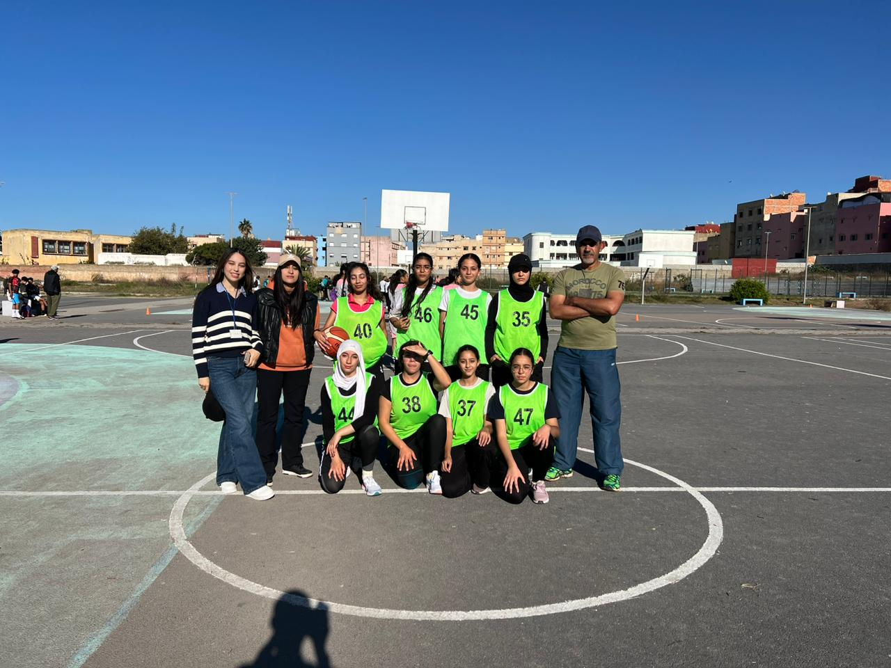

Le début de saison de l’équipe de basket-ball de l’option académique du Lydex a montré des performances contrastées entre les équipes féminines et masculines lors des deux premiers matchs du tournoi de basket-ball à 5 organisé par la Direction Provinciale de Salé.
Equipe féminine : Une montée en puissance :
L’équipe féminine du Lydex a brillamment démarré la saison avec deux victoires écrasantes.
Dans leur premier match organisé le vendredi 29 novembre , l’équipe a pu gagner contre l’équipe adverse avec un score serré de 14-12.
Le vendredi 6 décembre, les joueuses de l’équipe ont affronté une équipe de niveau nettement inférieure et ont remporté une victoire écrasante de 19-8.
Actuellement l’équipe féminine se prépare activement , sous la direction du coach SABAH LAALEJ , pour une nouvelle confrontation, impatiente de prouver encore une fois sa dominance sur le terrain.
Equipe masculine: Un défi à relever:
En revanche, l’équipe masculine du Lydex a connu un début de saison plus difficile. Lors des deux premiers matchs, ils ont affronté des adversaires dont le niveau de jeu était très développé. Malheureusement, cela s’est traduit par deux défaites successives menant à l’élimination de l’équipe masculine du tournoi de basket-ball à 5.
En somme, la saison promet d’être pleine de rebondissements avec des perspectives de plus en plus encourageantes. Les supporteurs peuvent s’attendre à des matchs captivants et à des rencontres envoûtantes .